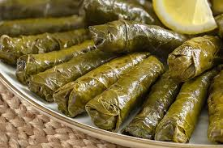

SARMA

Malzemeler
- 500 gram tokat yaprağı (salamura)
- 1 adet limon
- Zeytinyağı
İç Harcı
- 2 orta boy kuru soğan
- 1,5 su bardağı pirinç
- Maydanoz
- 1 yemek kaşığı salça
- Karabiber
- Kırmızı pul biber
- Kimyon
- Nane
- Tuz
- 2 yemek kaşığı sıvı yağ
Yapılışı
- Öncelikle salamura yapraklar 2-3 dakika sıcak suda bekletilir, yıkanır ve süzgece alınır.
- Geniş bir kabın içerisine soğanlar rendelenir.
- Üzerine zeytinyağı dökülür.
- Pirinç yıkanarak kabın içerisine eklenir.
- Baharatlar, salça ve tuzu da ilave edildikten sonra ince kıyılmış maydanozu da eklenerek karıştırılır.(çiğden bir iç harç olacak)
- Yaprağın geniş kısmına iç harçtan konulur ve rulo gibi iki yanlardan kapatarak sarılır. Bu işleme yaprak bitene kadar devam edilir.
- Sardığımız yaprakların üzerine zeytinyağı ve limon dilimleri ekleyip yaklaşık 5-6 su bardağı kadar da sıcak su ilave edilerek kısık ateşte pişirilir.(üzerine sarmalar dağılmasın diye tencere kapağından biraz küçük ebatta bir kase kapatabilirsiniz.)
Afiyet olsun…